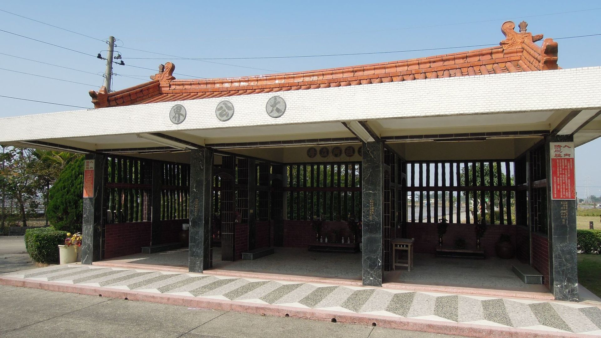
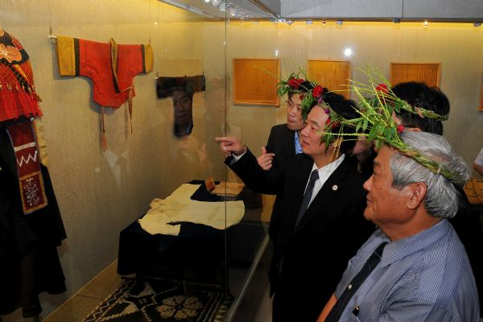
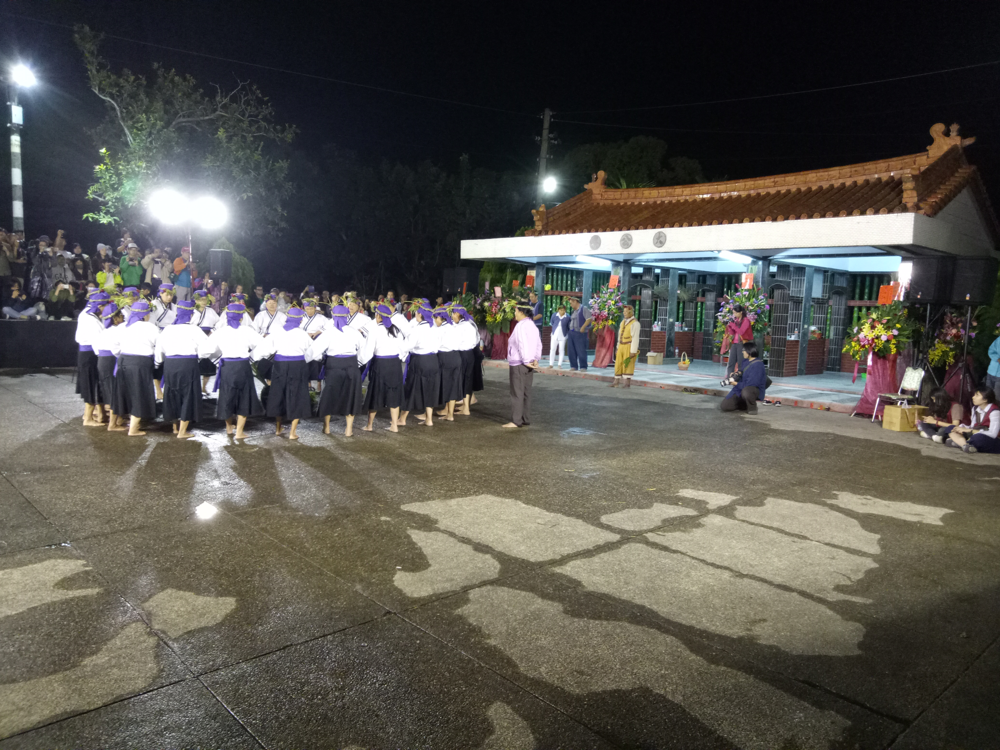
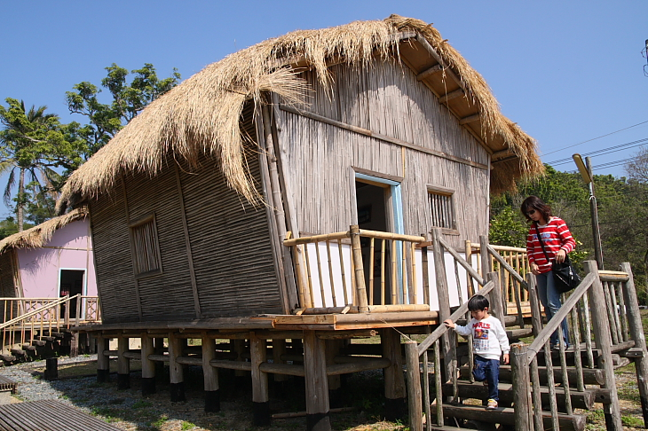
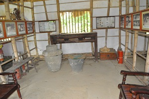
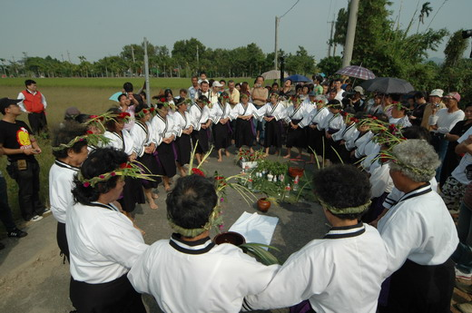
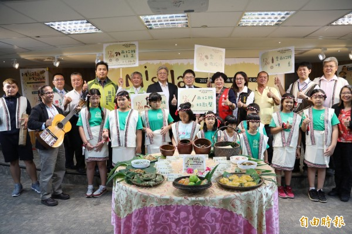
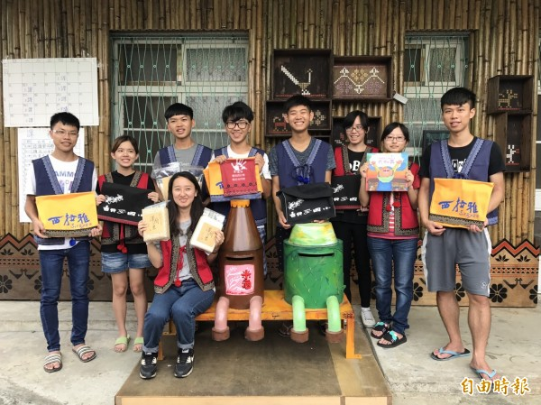
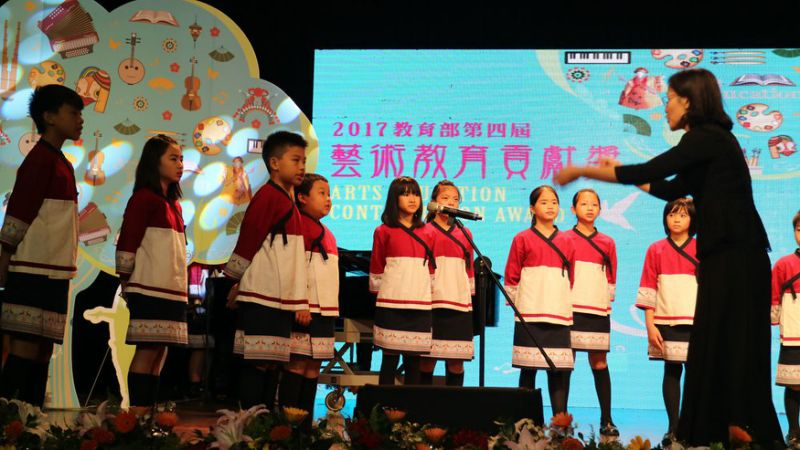

作家
Portfolio
小說

未來發展
我們認為，綜觀前面所有的文獻資料及作品，西拉雅文學的未來發展可以從兩個角度切入了解:
一、西拉雅文化保存及復育
西拉雅文學的一大根基在於了解西拉雅文化與歷史，已發生的歷史不可磨滅，但同時也仍然持續被創造當中，要如何使這篇章繼續寫下去，文化的傳承自然不可失去它的重要性。
有文化存在的前提，才有歷史的意義，也才有文學的產生。
它的文化從有形的物體如公廨、各類文物、服飾、風景區的建築…等，到無形的阿立祖、夜祭、哮海祭、傳統儀式、傳說故事…等，都是文化保育重要的一部份。






二、如何讓人們更加了解西拉雅
文化保存以後，若是沒有人關注，沒有人理解，也就不會再有西拉雅文學的存在，如何推廣西拉雅讓大家看見它並理解它，也是現今一大課題。
對西拉雅文化保存最力的或可說是蘇煥智主政的臺南縣政府，蘇在其任內成立了臺灣第一個縣級的原住民族委員會「臺南縣西拉雅原住民族事務委員會」；此外，位於雲嘉南靠山地區的臺灣第13個國家風景區「西拉雅國家風景區」在命名上首度兼具人文意涵，也是由臺南縣政府爭取成立的國家風景區，該風景區也曾與縣府合作辦理文化體驗營及走鏢等傳統西拉雅活動。在一些地區也有設立相關的文化園區與展覽館，如佳里區的北頭洋平埔文化村、蕭壠文化園區常設展，以及麻豆區的蔴荳古港文化園區等等。
另外，在臺南縣政府所主導開發的南科特定區中，縣府將其中三條最主要幹道分別命名為「西拉雅大道」、「目加溜灣大道」及「直加弄大道」，也被認為是縣府在紀念發揚西拉雅文化的展現。



結論&資料來源
西拉雅文學並不是一個能夠獨立保存及發展的個體，它不僅與這個民族的文化、傳統、語言、人民、文物息息相關，也與整個台灣密不可分，與其說它屬於台灣，不如說它是台灣的一部份。然而卻沒有多少人能夠意識到，其中任何一個的消逝，會像小螺絲鬆脫一樣如何地大大影響整個機械的發展。
文學、文化與歷史三者，本就是一個族群相輔相成的條件，缺一不可，也沒有優劣之分，更宏觀地看待這一切的話，每一個族群之間，也都有其互相影響的一些元素與關係，換句話說，任何一個族群的任一條件一旦消逝，影響的將不只是這個族群本身，更是所有人的未來，所以，復育及保存不是與你我無關，也不能只是說說或者依靠他人，而是要從每一個人做起。
資料來源
少年西拉雅圖片 https://musicpeople123.com/event/201609141930siraya 羊子喬圖片 http://orchid.shu.edu.tw/article/article_author.php?sn=95
張德本圖片 http://163.32.124.24/ksme/artsdisplay.asp?systemno=0000000704&artskind=&querkind=&dtdtype=&listtype=&dtdcodestr=&dtdcode=
葉石濤圖片 http://jalo.pixnet.net/blog/post/22143355-%E5%A4%A7%E5%B8%AB%E5%86%8D%E8%A6%8B%E4%BA%86%E3%80%82%E6%87%B7%E5%BF%B5%E5%8F%B0%E7%81%A3%E6%96%87%E5%AD%B8%E5%A4%A7%E5%B8%AB-%E8%91%89%E7%9F%B3%E6%BF%A4
褚士瑩圖片 https://www.ntu.edu.tw/spotlight/2016/732_20160114_2.jpg
Header圖片 http://bpic.588ku.com/back_pic/04/36/85/49584a5cd710e42.jpg!/fh/300/quality/90/unsharp/true/compress/true
方耀乾圖片 https://upload.wikimedia.org/wikipedia/commons/a/ad/Png_Iau-khian.jpg
林建隆圖片 http://cn.ta.org.tw/index.php?item=other&sn=51
在西拉雅呼喊全世界：褚士瑩發現台灣之旅 http://npost.tw/archives/36989
刺桐花之戰：西拉雅台灣女英雄金娘的故事 http://www.books.com.tw/products/0010593036
台窩灣擺擺 http://www.eslite.com/product.aspx?pgid=1001117692178056
西拉雅末裔潘銀花 http://goods.ruten.com.tw/item/show?21502266004750
西拉雅北頭洋部落紀事 http://goods.ruten.com.tw/item/show?21711534570028
未來的花園 http://goods.ruten.com.tw/item/show?21206177192266
神話故事 http://amostory.dmtip.gov.tw/index.htm
公廨-（維基百科）
西拉雅文物館-（台南市政府全球資訊網）
頭社平埔文化園區照片-（Xuite日誌-隨意窩）
哮海祭-（Xuite日誌-隨意窩）
1-（自由時報）
2-（自由時報電子報）
3-（奇摩新聞）
4-（ten旅報）
5-（USB部落格）